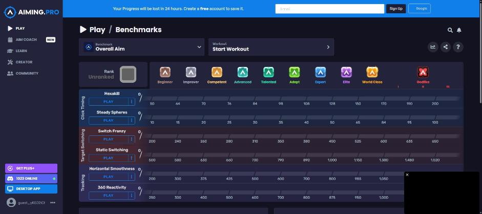

Aiming.Pro には感度を自動で探す機能はありません（公式ガイドと画面で確認済み。成績にも「行き過ぎ／足りない」の統計は出ません）。だから自分で 3 通りを比べます。Hexakill 1 本なら 10 分で終わります。
確かめることは 2 つあります。順番にやります。
同じ速さになっているか（5 分）
操作の仕方（どこを押すか）は、下の「画面の順番」にスクショ付きで全部あります。設定がまだなら先にそちらを 1 回通してください（横 7 なら 0.21、縦 10 なら 0.3）。
- マウスパッドの左端と右端に目印を決めます（パッドの端そのものでかまいません）。
- サドンを起動し、何か目印になる物（ドアや柱）に照準を合わせます。左の目印から右の目印までマウスを一気に動かし、どこまで回ったかを覚えます。「ちょうど真後ろ」「真横より少し先」のような覚え方で十分です。3 回やって、だいたい同じになることを確かめます。
- Aiming.Pro で Hexakill を始め（FIRE TO START の画面のまま、撃たずに）、同じ動きをします。壁の格子の線を目印にすると回った量が分かります。
- 同じだけ回れば A は合格です。B へ進みます。
ずれていた時の直し方
- Aiming.Pro の方が回り過ぎる → 横の値を少し下げる（0.21 → 0.19 のように 1 割ずつ）。
- Aiming.Pro の方が足りない → 横の値を少し上げる（0.21 → 0.23）。
- 直したら手順 2〜3 をやり直します。大きくずれる時は、サドンの感度の読み間違い（縦と横の取り違え）か、マウスの DPI ボタンが途中で切り替わっている可能性が高いです。
その感度が自分に合っているか（10 分）
使うドリルは Hexakill 1 本
左の PLAY → BENCHMARKS を開くと「Overall Aim」の 6 本が並びます（押す所は下の「画面の順番」の 2〜3）。使うのは一番上の Hexakill だけです。止まった的 6 個を次々に撃つ 1 分のドリルで、フリックの正確さがそのまま点になります。感度が高すぎると的を通り過ぎてから戻り、低すぎると的の手前で止まって刻むので、感度の違いが一番素直に点に出ます。
作った人の実感（2026-10-08）：最初は性質の違う 3 本（Hexakill・Static Switching・Horizontal Smoothness）で比べる手順にしていましたが、実際にやってみると 3 本 × 3 通り × 3 回 ＝ 27 回は面倒で続きませんでした。Hexakill だけでも傾向は十分に分かるので、1 本に絞っています。3 本でやりたい人は下の補足へ。

やり方
- 今の感度（例 0.21）で Hexakill を 3 回やり、一番いい点を下の表に書きます。1 回目は慣らしなので、点が伸びるのは普通です。
- 設定を開き（画面の順番の 5〜6：クリック → Esc → SETTINGS）、横を2 割下げます（0.21 → 0.17）。縦も同じ比率で下げます（0.3 → 0.24）。Hexakill を 3 回やり、一番いい点を書きます。
- 横を2 割上げて（0.25、縦 0.36）同じことをします。
- 表が埋まると、下に判定が出ます。点が一番良かった感度が、今の自分に合っている感度です。
やる順番は「今 → 下げ → 上げ」でなくても構いませんが、3 通りとも同じ日・同じ姿勢・同じ DPI でやってください。日をまたぐと腕の調子の差が感度の差より大きくなります。
点の記録と平均は、専用ページ「感度くらべ」でもできます。感度ごとに何回でも記録でき、平均と最高で判定します。スマホでも使えて、結果を LINE 用の文字や URL にして人に見せられます。
点を書き込む表（この端末のブラウザに残ります）
Hexakill の行だけ埋めれば判定が出ます。下の 2 行は 3 本でやる人用で、空のままで構いません。
| ドリル | 2 割下げ 0.17 | 今の感度 0.21 | 2 割上げ 0.25 |
|---|---|---|---|
| Hexakill | |||
| Static Switching（任意） | |||
| Horizontal Smoothness（任意） |
列の見出しの数字は、下の計算機に入れたサドンの横の感度から自動で出ます。
判定の読み方
- 今の感度が勝った → サドンの感度はそのままで大丈夫です。あとは練習あるのみ。
- 下げた方が勝った → サドンの感度も 2 割下げてみます（横 7 → 5.6、縦 10 → 8）。1 週間使って慣れたら、もう一度この表をやります。
- 上げた方が勝った → サドンの感度を 2 割上げます（横 7 → 8.4、縦 10 → 12）。同じく 1 週間後にもう一度。
- 差が小さい（3 つの点が数％以内） → 感度のせいではありません。今のままにして Hexakill を練習します。
Aiming.Pro の値からサドンの値に戻すには ÷ 0.03 です（0.17 → 5.7、0.25 → 8.3）。サドンの感度は整数しか入らないので、近い整数にします。
補足：もっと確かめたい人向け（3 本で比べる）
Hexakill はフリックだけなので、追い（トラッキング）や大きな振りも見たい人は、同じ Benchmarks の Static Switching と Horizontal Smoothness を足して 3 本で比べます。表の下 2 行に点を入れると、3 本のうち 2 本以上で最高だった感度で判定します。時間は 3 倍（30 分）かかります。
| ドリル | 何をするか | 感度が高すぎるとこうなる | 低すぎるとこうなる |
|---|---|---|---|
| Hexakill Click Timing | 止まった的 6 個を次々に撃つ。フリックの正確さ | 的を通り過ぎてから戻る。外れが増える | 的の手前で止まり、ちょんちょんと刻んでから撃つ。時間がかかる |
| Static Switching Target Switching | 離れた的から的へ照準を移す。大きな振り | 行き過ぎる。戻しで時間を失う | 腕を大きく動かすことになり、パッドが足りなくなる |
| Horizontal Smoothness Tracking | 横に動く的に照準を乗せ続ける。追いの滑らかさ | 線がガタつき、的から外れがち | 的の動きに追いつけず、遅れる |